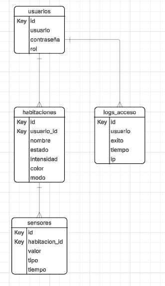
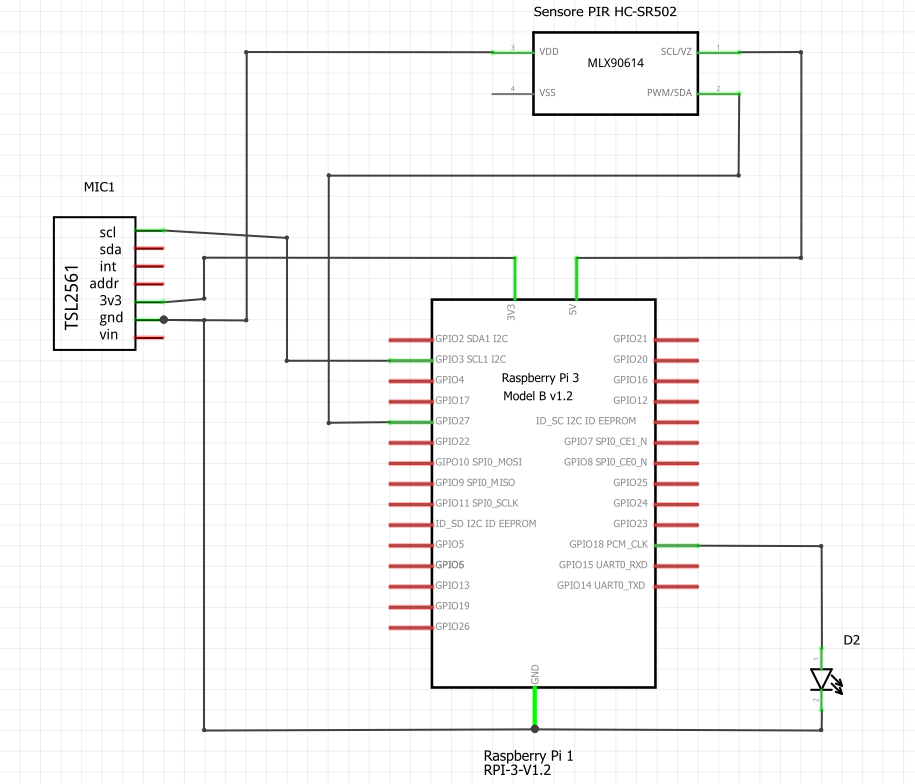

Información del Proyecto
Detalles técnicos, procesos y estructura del sistema de iluminación inteligente.
Justificación
La iluminación representa uno de los mayores consumos energéticos en edificios corporativos, especialmente en áreas de uso intensivo como oficinas, salas de reuniones y pasillos. En GreenTech Tower, donde conviven múltiples empresas con horarios flexibles, resulta ineficiente mantener las luces encendidas de forma constante.
El desarrollo de un sistema de iluminación inteligente permitirá: • Reducir significativamente el consumo eléctrico al encender luces solo cuando se detecte presencia y en función de la luz natural disponible. • Aumentar la vida útil de las luminarias, disminuyendo costos de mantenimiento. • Garantizar confort y seguridad a los usuarios, al evitar espacios oscuros o sobre iluminados. • Contribuir a la sostenibilidad del edificio, alineándose con las tendencias de Smart Buildings y Green Energy.
En resumen, la implementación de este módulo no solo optimiza recursos, sino que también mejora la experiencia de los ocupantes y refuerza la imagen del edificio como referente tecnológico y ambiental.
Objetivo General
Diseñar e implementar un sistema de iluminación inteligente en GreenTech Tower, basado en sensores de presencia y luminosidad, capaz de gestionar automáticamente el encendido, apagado y regulación de luces, optimizando el consumo energético y garantizando el confort de los usuarios.
Objetivos Específicos
1. Integrar sensores de luminosidad (LDR) y de movimiento (PIR) para detectar condiciones ambientales y de ocupación.
2. Desarrollar un algoritmo de control que combine la información de los sensores para decidir el encendido/apagado/regulación de luces.
3. Implementar una interfaz gráfica en Python que permita monitorear el sistema y realizar ajustes manuales.
4. Documentar y validar el funcionamiento mediante pruebas en un entorno de simulación o prototipo físico.
Estado del Arte
La iluminación inteligente es un área de la domótica que ha evolucionado significativamente en los últimos años, impulsada por la búsqueda de eficiencia energética, confort y sostenibilidad. Diferentes investigaciones y desarrollos tecnológicos han demostrado que la automatización de la iluminación permite optimizar el consumo eléctrico mediante el ajuste de la intensidad lumínica en función de las condiciones ambientales y la presencia de personas. Existen múltiples soluciones comerciales y académicas que integran sensores de luminosidad y detectores de movimiento para regular la iluminación artificial en tiempo real. El sistema permite la gestión remota y la integración con asistentes virtuales. Asimismo, en entornos de investigación se han desarrollado algoritmos de control basados en lógica difusa e inteligencia artificial, con el objetivo de lograr una regulación más precisa y adaptable al comportamiento humano. A nivel práctico, los sistemas actuales presentan ciertas limitaciones, como la necesidad de infraestructuras costosas, dependencia de plataformas comerciales cerradas o poca flexibilidad para personalizar la lógica de funcionamiento según las necesidades del usuario. En este sentido, diversos proyectos académicos han explorado el uso de lenguajes de programación visual como herramienta para que los usuarios puedan configurar y simular sus propios esquemas de automatización sin necesidad de un conocimiento avanzado de programación. En conclusión, si bien existen sistemas avanzados de iluminación inteligente, todavía hay espacio para propuestas que integren accesibilidad, flexibilidad y bajo costo, especialmente en contextos educativos y experimentales. Bajo esta perspectiva, el presente proyecto busca desarrollar una solución de iluminación automatizada que, utilizando programación visual, permita controlar el encendido y regulación de la luz en función de la cantidad de luz natural disponible y la presencia de personas en la habitación, ofreciendo un enfoque didáctico, adaptable y eficiente.
Plan de trabajo y Calendario de Actividades
A continuación se detalla el plan de trabajo dividido en parciales y entregables finales.
1er Parcial
| Descripción/Semana | Jueves 31/07 | Jueves 07/08 | Jueves 14/08 | Jueves 21/08 | Jueves 28/08 | Jueves 04/09 |
|---|---|---|---|---|---|---|
| Justificación | ||||||
| Objetivos | ||||||
| Estado del Arte | ||||||
| Plan de Trabajo y Calendario de Actividades | ||||||
| Esquema General del Proyecto - Flujograma | ||||||
| Diagrama de Base de Datos | ||||||
| Git del Proyecto – Readme información del grupo | ||||||
| Código de Interacción de sensores |
2do Parcial
| Descripción/Semana | Jueves 25/09 | Jueves 02/10 | Jueves 09/10 | Jueves 16/10 | Jueves 23/10 | Jueves 30/10 | Jueves 06/11 |
|---|---|---|---|---|---|---|---|
| Descripción de Componentes | |||||||
| Diagrama Eléctrico | |||||||
| Conexión de Sensores y Base de Datos | |||||||
| Avances de Interfaz – FrontEnd |
Calendario de Entregables Finales
| Descripción | Jueves 13/11 | Jueves 20/11 |
|---|---|---|
| Presupuesto - Horas Hombre | ||
| Cambios o Ajuste realizados | ||
| Manual de Usuario | ||
| Bibliografía | ||
| Interfaz Gráfica |
Flujograma del Proyecto
A continuación se muestra el flujograma general de funcionamiento del proyecto:

A Diagrama de Flujo:
Arquitectura de Base de Datos
La base de datos está diseñada bajo un modelo relacional que organiza y conecta la información de usuarios, habitaciones, sensores y registros de acceso. Su estructura permite una administración eficiente del sistema, garantiza seguridad, almacena datos de los sensores y gestiona el control de iluminación en cada ambiente.
Tablas Principales
La arquitectura está compuesta por cuatro tablas principales: usuarios, habitaciones, sensores y logs_acceso. Estas tablas se relacionan mediante claves primarias (PK) y claves foráneas (FK), asegurando integridad referencial y permitiendo operaciones como monitoreo, configuración y control de iluminación.
Tabla: usuarios
- Campos principales: id (PK), usuario, contraseña, rol
- Función: controla autenticación, permisos y registro de actividad
Tabla: habitaciones
- Campos principales: id (PK), usuario_id, nombre, estado, intensidad, color, modo
- Función: registra la configuración actual de cada habitación y vincula cada espacio con el responsable (usuario)
Tabla: sensores
- Campos principales: id (PK), habitacion_id, valor, tipo, tiempo
- Función: almacenar mediciones en tiempo real usadas por el sistema para controlar la iluminación
Tabla: logs_acceso
- Campos principales: id (PK), usuario, exito, tiempo, ip
- Función: auditoría y seguimiento de seguridad
Relaciones Entre Tablas
- 1 usuario → muchas habitaciones: un usuario puede administrar varias habitaciones (habitaciones.usuario_id → usuarios.id)
- 1 habitación → muchos sensores: cada sala puede tener múltiples sensores asociados (sensores.habitacion_id → habitaciones.id)
- 1 usuario → muchos logs de acceso: cada registro de login queda asociado al usuario (logs_acceso.usuario → usuarios.id)
Arquitectura Lógica
La arquitectura sigue un patrón jerárquico:
- Usuarios → administran Habitaciones
- Habitaciones → contienen Sensores
- Sistema → registra actividad en Logs de Acceso
Este diseño permite:
- Escalabilidad: agregar nuevas habitaciones o sensores sin afectar otras partes
- Seguridad a nivel de acceso
- Registro histórico de datos
- Relación clara entre usuario → configuración → sensores
Descripción de Componentes
| Componente | Función principal | Voltaje de operación | Interfaz / Tipo de señal | Consumo / Corriente típica | Características destacadas |
|---|---|---|---|---|---|
| Raspberry Pi 3 Model B | Microcomputadora para control y procesamiento de datos | 5 V DC (2.5 A mín.) | GPIO, USB, HDMI, Wi-Fi, Bluetooth, Ethernet | 700 – 1000 mA | CPU Quad-Core 1.2 GHz, 1 GB RAM, Wi-Fi/BT integrados, 40 pines GPIO |
| Sensor PIR HC-SR501 | Detección de movimiento por radiación infrarroja | 4.5 – 20 V DC | Salida digital (HIGH/LOW) | < 60 µA en reposo | Alcance 3–7 m, ángulo 110°, retardo ajustable |
| Sensor de Luz GY-2561 (TSL2561) | Medición de intensidad lumínica (lux) | 3.3 – 5 V DC | I²C (0x29–0x49) | 0.6 mA activa / 15 µA espera | Mide visible + IR, 0.1–40 000 lux, alta precisión |
| Fuente de Alimentación 5 V | Suministro de energía a los módulos | 5 V DC (2.5–3 A) | — | — | Protecciones contra sobrecarga y cortocircuito |
| Tira de Luces LED RGB (5 V) | Iluminación o señalización visual | 5 V DC | Digital o analógica | ~60 mA por LED | RGB, direccionables o fijas, flexible |
1. Raspberry Pi 3 Model B
Descripción general: La Raspberry Pi 3 Model B es una computadora de placa única diseñada para ejecutar sistemas Linux y realizar tareas de automatización, control e IoT.
Características técnicas:
- Procesador: Broadcom BCM2837, Quad-Core ARM Cortex-A53 a 1.2 GHz
- Memoria RAM: 1 GB LPDDR2
- Conectividad: Wi-Fi 802.11n, Bluetooth 4.1, Ethernet 10/100
- Almacenamiento: microSD
- Puertos: 4× USB 2.0, HDMI, Jack AV, 40 pines GPIO
- Alimentación: 5 V DC, 2.5 A mín.
Aplicaciones comunes: Automatización del hogar, servidores ligeros, estaciones meteorológicas, robótica educativa y sistemas IoT.
2. Sensor PIR HC-SR501
Descripción general: Sensor PIR que detecta movimiento mediante cambios en radiación infrarroja.
Características técnicas:
- Voltaje: 4.5 – 20 V DC
- Distancia: 3 – 7 m
- Ángulo: 110°
- Retardo: 3 – 300 s
- Salida digital HIGH/LOW
- Consumo: < 60 µA
Aplicaciones comunes: Alarmas, luces automáticas, sistemas de presencia.
3. Sensor de Luz GY-2561 (TSL2561)
Descripción general: Sensor digital de luminosidad que mide luz visible e infrarroja mediante I²C.
Características técnicas:
- Voltaje: 3.3 – 5 V DC
- Interfaz: I²C (0x29, 0x39, 0x49)
- Rango: 0.1 – 40 000 lux
- Consumo: 0.6 mA activo / 15 µA espera
- Resolución: 16 bits
Aplicaciones comunes: Iluminación automática, estaciones meteorológicas y dispositivos IoT.
4. Fuente de Alimentación 5 V
Descripción general: Provee la energía estable y continua para la Raspberry Pi y sus periféricos.
Características típicas:
- Salida: 5 V DC, 2.5–3 A
- Entrada: 100–240 V AC
- Protecciones contra sobrecarga y cortocircuito
5. Tira de Luces LED RGB (5 V)
Descripción general: Tira flexible con LEDs RGB, puede ser direccionable o fija.
Características técnicas:
- Voltaje: 5 V DC
- Consumo: 60 mA por LED
- Control: digital (direccionable) o analógico
- Colores: RGB
Aplicaciones comunes: Decoración, señalización, domótica, iluminación ambiental.
Diagrama Eléctrico

Diagrama eléctrico que muestra la Raspberry Pi junto con el sensor de movimiento, el sensor de luz y el emisor infrarrojo.
Diagrama que muestra la Raspberry Pi y el receptor infrarrojo. Esta configuración se utilizó para recibir los comandos del control de la luz LED y almacenarlos.
Presupuesto
Este presupuesto presenta el costo del proyecto basado en horas generales por fase, usando la tarifa Semi Senior = 60.000 Gs/h.
1. Fases del Proyecto y Horas Estimadas
1) Análisis y Relevamiento
- Comprensión del problema y objetivos.
- Revisión de sensores, arquitectura y requisitos.
- Horas estimadas: 10 h
2) Diseño del Sistema
- Diseño de la base de datos.
- Definición de arquitectura general.
- Elaboración de flujogramas.
- Horas estimadas: 8 h
3) Desarrollo
- Lectura de sensores (PIR, TSL2561, IR).
- Control de LED RGB.
- Implementación de la lógica de iluminación automática.
- Desarrollo de la interfaz en Python.
- Integración con base de datos.
- Horas estimadas: 25 h
4) Pruebas y Validación
- Pruebas unitarias y funcionales.
- Ajuste de sensibilidades de los sensores.
- Optimización del sistema.
- Horas estimadas: 10 h
5) Documentación
- Manual de usuario.
- Documentación técnica del sistema.
- Preparación del informe final.
- Horas estimadas: 7 h
2. Total de Horas Hombre
| Fase | Horas |
|---|---|
| Análisis | 10 |
| Diseño | 8 |
| Desarrollo | 25 |
| Pruebas | 10 |
| Documentación | 7 |
| Total | 60 |
3. Costo de Horas Hombre (Semi Senior)
60 horas × 60.000 Gs/h = 3.600.000 Gs
4. Costo de Hardware
| Concepto | Costo (Gs) |
|---|---|
| Raspberry Pi 3 Model B+ | 394.000 |
| Sensor de Luz TSL2561 | 50.000 |
| Sensor de Movimiento PIR | 40.000 |
| Luz LED RGB | 75.000 |
| Receptor IR | 20.000 |
| Emisor IR | 10.000 |
| Total Hardware | 589.000 |
5. Total General del Proyecto
| Concepto | Total (Gs) |
|---|---|
| Horas-Hombre | 3.600.000 |
| Hardware | 589.000 |
| TOTAL GENERAL | 4.189.000 |
Gestión del Cambio
Durante el desarrollo del proyecto se implementó un proceso simplificado pero formal de gestión del cambio con el objetivo de controlar las modificaciones que pudieran afectar el alcance, cronograma, costos, calidad técnica o experiencia de usuario del sistema de iluminación inteligente.
Todas las solicitudes fueron analizadas y aprobadas por el equipo técnico (Luis Agüero, Vanessa Ayala y Aldo Palacios) actuando como Comité de Control de Cambios (CCB) interno, con visto bueno final del Ing. Rodney Rojas cuando el cambio implicaba costo o alcance significativo.
Procedimiento de Gestión del Cambio
- Identificación del cambio por cualquier integrante.
- Análisis de impacto (tiempo, costo, riesgo técnico).
- Reunión rápida del CCB (generalmente los días jueves antes de la entrega parcial).
- Aprobación / Rechazo / Aprobación condicionada.
- Implementación y actualización de documentos afectados (diagrama de BD, código, presupuesto, manual, etc.).
Registro de Cambios Aprobados e Implementados
| Fecha | Solicitante | Descripción del Cambio | Justificación | Impacto estimado | Estado | Aprobado / Rechazado por |
|---|---|---|---|---|---|---|
| 09/10/2025 | Luis Agüero | Cambio de motor de base de datos de PostgreSQL a SQLite3 | Facilidad de despliegue en Raspberry Pi, cero configuración de servidor | -4 h configuración, 0 Gs | Aprobado | Equipo completo |
| 16/10/2025 | Vanessa Ayala | Reemplazo de protoboard por uno nuevo (falsos contactos constantes) | Errores intermitentes en sensores PIR y TSL2561 | +75.000 Gs (protoboard nuevo) | Aprobado | Equipo + Ing. Rodney Rojas |
| 23/10/2025 | Aldo Palacios | Rediseño completo del diagrama de base de datos en LucidChart | Eliminar campos redundantes y mejorar rendimiento | -2 h documentación | Aprobado | Equipo completo |
| 23/10/2025 | Aldo Palacios | Rediseño de la interfaz web en Figma (mejora UX/UI) | Interfaz inicial poco intuitiva para el usuario final | +6 h diseño y desarrollo FrontEnd | Aprobado | Equipo completo |
| 30/10/2025 | Vanessa Ayala | Inclusión del botón “Modo Noche” en la interfaz gráfica | Requerimiento del cliente para forzar baja intensidad en horarios nocturnos | +3 h desarrollo | Rechazado | Luís Agüero y Aldo Palacios |
| 06/11/2025 | Luis Agüero | Cambio de librería de control de tira LED (de rpi_ws281x a adafruit-circuitpython-neopixel) | Mejor compatibilidad y documentación | +5 h recodificación | Aprobado | Equipo completo |
| 13/11/2025 | Todo el equipo | Simplificación del flujograma de control (eliminación de rama “luz natural suficiente → apagar”) | Comportamiento más intuitivo para el usuario | -1 h documentación | Aprobado | Ing. Rodney Rojas |
Resumen de Impacto Global de los Cambios Aprobados
- Horas adicionales netas: +8 horas (dentro del margen de contingencia)
- Costo adicional: 75.000 Gs (nuevo protoboard) → cubierto por fondo común del grupo
- Cambios de alcance: ninguno que afectará objetivos específicos originales
- Calidad final: mejorada significativamente
Documentos Actualizados tras Cambios
- Diagrama de base de datos (LucidChart)
- Diagrama eléctrico (nuevo protoboard y conexiones más limpias)
- Código fuente en GitHub
- Presupuesto
- Manual de usuario
- Interfaz gráfica (Figma, nueva versión exportada a HTML/CSS)
Lecciones Aprendidas
- Los cambios de hardware (protoboard, sensores) deben probarse lo antes posible.
- SQLite es más que suficiente para proyectos de Raspberry Pi sin alta concurrencia.
- Documentar aunque sea mínimamente cada cambio evita confusiones en las entregas parciales.
- Aunque inicialmente no se llevó un registro formal exhaustivo, todos los cambios realizados fueron discutidos, aprobados por consenso y documentados a posteriori, cumpliendo con los principios básicos de gestión del cambio en proyectos de ingeniería.
Manual de Usuario
El presente manual describe el funcionamiento, operación y uso de la interfaz del sistema de iluminación inteligente.
1. Introducción
El sistema de iluminación inteligente utiliza sensores de movimiento (PIR) y luminosidad (TSL2561) para automatizar el encendido, apagado y regulación de las luces de un espacio. A través de la interfaz gráfica, el usuario puede monitorear el estado de los sensores, visualizar datos en tiempo real y controlar manualmente el sistema.
2. Requisitos del Sistema
Hardware necesario
- Raspberry Pi 3 Model B
- Sensor PIR HC-SR501
- Sensor de luz TSL2561
- Tira LED o luminaria controlada por GPIO
- Fuente de alimentación 5 V (2.5 A mínimo)
Software necesario
- Python 3
- Librerías para sensores
- Interfaz gráfica del proyecto
- Conexión a la base de datos
3. Inicio del Sistema
Para iniciar el sistema correctamente:
- Conectar la Raspberry Pi a la alimentación de 5 V.
- Verificar que los sensores estén conectados a los pines GPIO correspondientes.
- Encender la Raspberry Pi y esperar que el sistema operativo cargue.
- Ejecutar la interfaz gráfica del proyecto mediante:
python3 app.py
La pantalla principal se mostrará automáticamente.
4. Descripción de la Interfaz
Estado de la Iluminación
Puede mostrar tres estados:
- Encendida
- Apagada
- Automática (controlada por sensores)
Modos de Operación
Modo Automático (Recomendado)
- La luz se enciende solo si hay movimiento.
- La intensidad o el encendido dependen de la luz natural detectada.
- La luz se apaga automáticamente cuando no se detecta presencia por un tiempo definido.
Modo Manual
- Encender la luz sin importar la luminosidad.
- Apagarla manualmente.
- Mantener un estado fijo.
- Este modo desactiva temporalmente la automatización.
Mantenimiento Básico
- Limpieza: Mantener los sensores libres de polvo.
- Verificar conexiones: Revisar periódicamente cables en GPIO.
- Calibrar sensores: Ajustar sensibilidad del PIR o reubicar sensor de luz si es necesario.
Bibliografía
-
Monk, S. (2016). Programming the Raspberry Pi: Getting Started with Python. McGraw-Hill Education.
Referencia para programación de Raspberry Pi y control de hardware mediante Python. -
Monk, S. (2019). Raspberry Pi Cookbook: Software and Hardware Problems and Solutions. O'Reilly Media.
Guía práctica sobre manejo de GPIO, sensores y desarrollo de proyectos de automatización. -
Adafruit. (2025). NeoPixel Digital RGB LED Strip Guide. Adafruit Learning System.
Disponible en: https://learn.adafruit.com/adafruit-neopixel-uberguide
Información técnica sobre tiras LED RGB y control desde Raspberry Pi. -
SparkFun Electronics. (2025). PIR Motion Sensor Tutorial. SparkFun Learning.
Disponible en: https://learn.sparkfun.com/tutorials/pir-sensor-hookup-guide
Explicación sobre funcionamiento, cableado y calibración de sensores PIR. -
Adafruit. (2025). TSL2561 Luminosity Sensor Guide. Adafruit Learning System.
Disponible en: https://learn.adafruit.com/tsl2561
Documentación sobre sensores de luz digitales, lectura de lux y programación. -
SQLite.org. (2025). SQLite Documentation.
Disponible en: https://www.sqlite.org/docs.html
Referencia para gestión de bases de datos ligeras en Raspberry Pi. -
Lucidchart. (2025). Database Diagram Tool.
Disponible en: https://www.lucidchart.com/pages/es/diagramas-de-base-de-datos
Herramienta utilizada para diseño y documentación de la base de datos. -
RasPi.TV. (2025). Raspberry Pi Projects and Tutorials.
Disponible en: https://raspi.tv
Recursos y tutoriales generales sobre proyectos de Raspberry Pi y domótica. -
ChatGPT (2025). Asistente de OpenAI.
Apoyo técnico y moral en desarrollo, documentación y motivación durante el proyecto de iluminación inteligente.
Disponible en: https://chat.openai.com